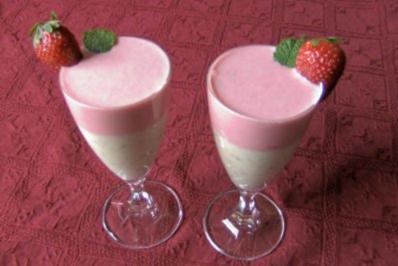

Schnelle Dessertrezepte
Homepage
Our Clients
About Us
Privacy policy
Terms and Conditions
Photo gallery
Contacts
Welcome to Schnelle Dessertrezepte
Schnelle Desserts für jede Gelegenheit | Chefkoch.de
Schnelle Desserts - für den spontanen Süßhunger | BRIGITTE .
130 Dessert im Glas - Die einfachsten Rezepte-Ideen in 2021 .
Dessert-Rezepte: Himmlisch süsse Köstlichkeiten | Migusto
Dessert-Rezepte mit Schoggi, Früchten und Co. | fooby.ch
Einfache Dessert Rezepte | Einfach Backen
15 Rezepte für schnelle, einfache Low Carb Desserts .
Dessert-Rezepte - von einfach bis raffiniert - LECKER.de
6 schnelle Dessertideen für die Festtage - Loumalou
Dessert: Rezepte für feinen Nachtisch - [ESSEN UND TRINKEN]
Photo gallery
2021.06.21 14:29
<div class="mc_vtvc_th b_canvas"><div class="cico" style="width:234px;height:131px;"><div class="rms_iac" style="height:131px;line-height:131px;width:234px;" data-height="131" data-width="234" data-alt="Feines Dessert ohne Backen und Mehl! Schnell und lecker!" data-role="presentation" data-class="rms_img" data-src="https://tse2.mm.bing.net/th?id=OVP.xcqfgqx9n8oitpL5n37ADwEsDh" frameborder="0" allow="accelerometer; autoplay; encrypted-media; gyroscope; picture-in-picture" allowfullscreen>

Vivamus fermentum nibh
© Schnelle Dessertrezepte. All rights reserved. | Photos by Fotogrph
Twitter
Pinterest
Google+
Pinterest